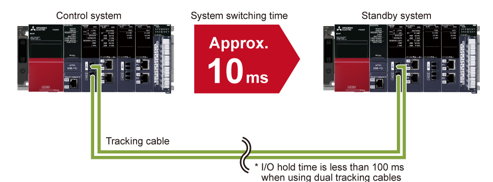

Controllers MELSEC iQ-R Series Fitur Produk -CPU-

Process CPU module, SIL2 process CPU module, Redundant function module
Modul CPU proses sangat fleksibel sesuai dengan aplikasi proses dari kendali loop sederhana hingga kendali loop rumit. Biaya awal dan pemeliharaan dapat dikurangi dengan mengganti sistem kendali terdistribusi yang sangat terspesialisasi (DCS) dengan pengendali terprogram untuk proses. Ketika dipasangkan dengan modul fungsi redundan, sistem kendali redundan yang sangat andal dapat diwujudkan.
Modul CPU proses SIL2 IEC 61508 SIL 2
Antarmuka

Fitur<sup>Fitur gaya DCS dalam sistem kendali otomasi yang hemat biaya</sup>
- Instruksi proses ekstensif
- Max. 300 loop kendali
- Biaya rendah
- Sistem kendali proses memungkinkan eksekusi instruksi proses khusus (seperti PID dua derajat kebebasan, sample PI, dan auto-tuning) dan kendali proses skala besar dengan maksimum 300 loop
- Sistem otomasi berbiaya rendah setara dengan kemampuan DCS tanpa beban finansial dapat diwujudkan
Instalasi fleksibel sistem redundan
- Dapat diperpanjang hingga 550 m
- Konfigurasi sistem fleksibel
- Kabel pelacakan serat optik memungkinkan sistem siaga dipasang di lokasi terpencil hingga 550 m dari sistem kendali (utama)
- Pemasangan panel kendali lebih mudah dengan lebih sedikit batasan pada panjang kabel, memungkinkan konfigurasi sistem yang fleksibel

Pengalihan sistem cepat mewujudkan kendali yang sangat andal
- Kabel serat optik
- Pengalihan sistem cepat
- Sangat andal
- Kabel pelacakan kebal terhadap gangguan derau dan mendukung kecepatan transfer data yang cepat
- Kecepatan pengalihan sistem dari sistem kendali ke sistem siaga juga telah ditingkatkan menjadi kecepatan sekitar 10 ms, semakin meningkatkan keandalan sistem

Operasi tidak terganggu bahkan ketika terjadi kesalahan
- Pengurangan kegagalan titik tunggal
- Beragam konfigurasi redundan
- Penggantian online
-
Sistem redundan dapat meminimalkan risiko kegagalan titik tunggal dalam berbagai konfigurasi redundan yang dapat bervariasi tergantung pada penggunaan dan ukuran sistem kendali. Operasi tidak terganggu bahkan ketika terjadi kesalahan
 Konfigurasi redundan yang terdiri dari CPU kendali (utama) dan CPU siaga
Konfigurasi redundan yang terdiri dari CPU kendali (utama) dan CPU siaga Kabel ekstensi redundan dengan unit dasar ekstensi redundan*1
Kabel ekstensi redundan dengan unit dasar ekstensi redundan*1 Konfigurasi jaringan redundan dengan topologi kabel ganda dari CC-Link IE Field Network
Konfigurasi jaringan redundan dengan topologi kabel ganda dari CC-Link IE Field Network- Modul kepala jarak jauh redundan (stasiun jarak jauh ganda)
- Penggantian online kabel dan modul (hot-swapping) dimungkinkan saat terus mengoperasikan sistem ketika terjadi kesalahan, memungkinkan pemecahan masalah yang cepat
- *1.Didukung oleh modul CPU proses (R□PCPU) saja.

Rekayasa efisien melalui kompatibilitas ekstensif antara perangkat lunak dan perangkat
- Pembuatan layar efisien
- Sistem sangat dapat diskalakan
- Rekayasa efisien
- Pembuatan layar lebih mudah dalam lingkungan rekayasa efisien yang diwujudkan oleh kompatibilitas ekstensif antara perangkat lunak rekayasa GX Works3 bersama dengan SCADA software GENESIS64™, GT SoftGOT2000, dan GOT2000
- Sistem kendali SCADA yang dapat diskalakan dapat diwujudkan dengan mengkombinasikan produk-produk ini

Deteksi kesalahan pada perangkat terhubung dan jaringan di setiap sistem
- Diagnostik kedua sistem dalam sistem redundan
- Peningkatan keandalan sistem redundan
- ■ Kesalahan pada perangkat eksternal atau jaringan sistem (sistem kendali dan sistem siaga) dapat dideteksi dengan menjalankan program yang mendiagnosis perangkat eksternal atau jaringan dari kedua sistem redundan.

Spesifikasi
Spesifikasi modul CPU Proses/modul CPU proses SIL2
LD : Ladder diagramST : Structured textFBD : Function block diagramSFC : Sequential function chart
| Item | R08PCPU | R16PCPU | R32PCPU | R120PCPU |
|---|---|---|---|---|
| Operation control method | Stored program cyclic operation | |||
| I/O control mode | Refresh mode (Direct access I/O is available by specifying direct access I/O (DX, DY)) | |||
| Programming language | LDSTFBDSFC |
|||
| Extended programming language | Function block (FB), label programming (system/local/global) | |||
| Program execution type | Initial*2, scan*2, fixed scan, event execution*2, standby*2 | |||
| Number of I/O points (X/Y) | 4096 | 4096 | 4096 | 4096 |
| Constant scan (ms) (function for keeping regular scan time) |
0.2…2000 (setting available in 0.1 ms increments) |
|||
| Memory capacity | ||||
| Program capacity (step) | 80K | 160K | 320K | 1200K |
| Program memory (byte) | 320K | 640K | 1280K | 4800K |
| Device/label memory (ECC type)*3 (byte) | 1188K | 1720K | 2316K | 3380K |
| Data memory (byte) | 5M | 10M | 20M | 40M |
| Instruction processing time | ||||
| LD instruction (ns) | 0.98 | 0.98 | 0.98 | 0.98 |
| MOV instruction (ns) | 1.96 | 1.96 | 1.96 | 1.96 |
| E + instruction (floating-point addition) (ns) | 9.8 | 9.8 | 9.8 | 9.8 |
| Structured text IF instruction*4 (ns) | 1.96 | 1.96 | 1.96 | 1.96 |
| Structured text FOR instruction*45 (ns) | 1.96 | 1.96 | 1.96 | 1.96 |
| PC MIX value*5 (instructions/µs) | 419 | 419 | 419 | 419 |
| Interface connection port | ||||
| High-speed USB2.0 (miniB) | ● | ● | ● | ● |
| Ethernet (100BASE-TX/10BASE-T) | ● | ● | ● | ● |
| Memory interface*6 | ||||
| SD memory card | ● | ● | ● | ● |
| Extended SRAM cassette | ● | ● | ● | ● |
| Function*7 | ||||
| Multiple interrupt | ● | ● | ● | ● |
| Standard PID control | ● | ● | ● | ● |
| Process control | ● | ● | ● | ● |
| Data logging | ● | ● | ● | ● |
| Security function | ● | ● | ● | ● |
| Inter-module synchronization*8 | ● | ● | ● | ● |
| SLMP communication | ● | ● | ● | ● |
| Online module change | ● | ● | ● | ● |
| Simple CPU communication*9 | ● | ● | ● | ● |
| Web server | ● | ● | ● | ● |
| Item | R08PSFCPU-SET*10 | R16PSFCPU-SET*10 | R32PSFCPU-SET*10 | R120PSFCPU-SET*10 |
|---|---|---|---|---|
| Operation control method | Stored program cyclic operation | |||
| I/O control mode | Refresh mode (Direct access I/O is available by specifying direct access I/O (DX, DY)) | |||
| Programming language | LDST*2FBD*2 |
|||
| Extended programming language | Function block (FB), label programming (system/local/global) | |||
| Program execution type | Initial*2, scan*2, fixed scan, event execution*2, standby*2 | |||
| Number of I/O points (X/Y) | 4096 | 4096 | 4096 | 4096 |
| Constant scan (ms) (function for keeping regular scan time) |
0.2…2000 (setting available in 0.1 ms increments) |
|||
| Memory capacity | ||||
| Program capacity (step) | 80K (40K for safety programs)*11 |
160K (40K for safety programs)*11 |
320K (40K for safety programs)*11 |
1200K (40K for safety programs)*11 |
| Program memory (byte) | 320K | 640K | 1280K | 4800K |
| Device/label memory (ECC type)*3 (byte) | 1178K | 1710K | 2306K | 3370K |
| Data memory (byte) | 5M | 10M | 20M | 40M |
| Instruction processing time | ||||
| LD instruction (ns) | 0.98 | 0.98 | 0.98 | 0.98 |
| MOV instruction (ns) | 1.96 | 1.96 | 1.96 | 1.96 |
| E + instruction (floating-point addition) (ns) | 9.8 | 9.8 | 9.8 | 9.8 |
| Structured text IF instruction*4 (ns) | 1.96 | 1.96 | 1.96 | 1.96 |
| Structured text FOR instruction*4 (ns) | 1.96 | 1.96 | 1.96 | 1.96 |
| PC MIX value*5 (instructions/µs) | 419 | 419 | 419 | 419 |
| Interface connection port | ||||
| High-speed USB2.0 (miniB) | ● | ● | ● | ● |
| Ethernet (100BASE-TX/10BASE-T) | ● | ● | ● | ● |
| Memory interface*6 | ||||
| SD memory card | ● | ● | ● | ● |
| Extended SRAM cassette | ● | ● | ● | ● |
| Safety standard | ||||
| IEC 61508 SIL 2 | ● | ● | ● | ● |
| Function*7 | ||||
| Multiple interrupt | ● | ● | ● | ● |
| Standard PID control | ● | ● | ● | ● |
| Process control | ● | ● | ● | ● |
| Security function | ● | ● | ● | ● |
| SLMP communication | ● | ● | ● | ● |
| Online module change | ● | ● | ● | ● |
- *2.Tidak dapat digunakan untuk program kontrol keamanan.
- *3.Kaset SRAM tambahan memperluas area memori perangkat/label. (NZ2MC-8MBSE memperluas area memori perangkat/label sesuai dengan tipe memori ECC.)
- *4.Kalimat IF atau FOR dari teks terstruktur terdiri dari beberapa instruksi, yang dapat meningkatkan periode waktu pemrosesan.
- *5.Jumlah rata-rata instruksi seperti untuk instruksi dasar dan pemrosesan data yang dieksekusi dalam 1 μs. Semakin besar nilainya, semakin cepat kecepatan pemrosesannya.
- *6.Untuk informasi lebih lanjut, klik disini untuk merujuk ke spesifikasi kartu memori SD dan kaset SRAM.
- *7.Memory dump dan monitor waktu nyata tidak didukung.
- *8.Sinkronisasi antar-modul tidak didukung ketika digunakan dalam mode redundan.
- *9.Klik di sini untuk daftar perangkat yang dapat dihubungkan yang mendukung fungsi komunikasi CPU sederhana.
- *10.Paket produk mencakup modul CPU proses SIL2 (R□PSFCPU) dan modul fungsi SIL2 (R6PSFM).
- *11.Hingga 40K langkah dari kapasitas program dapat digunakan untuk program keamanan.
Spesifikasi modul fungsi redundan
| Item | R6RFM |
|---|---|
| Connection cable | Multi-mode optical cable |
| Max. distance (m) | 550 (when the core outer diameter is 50 µm) |
| Tracking cable data capacity (word) | 1M |